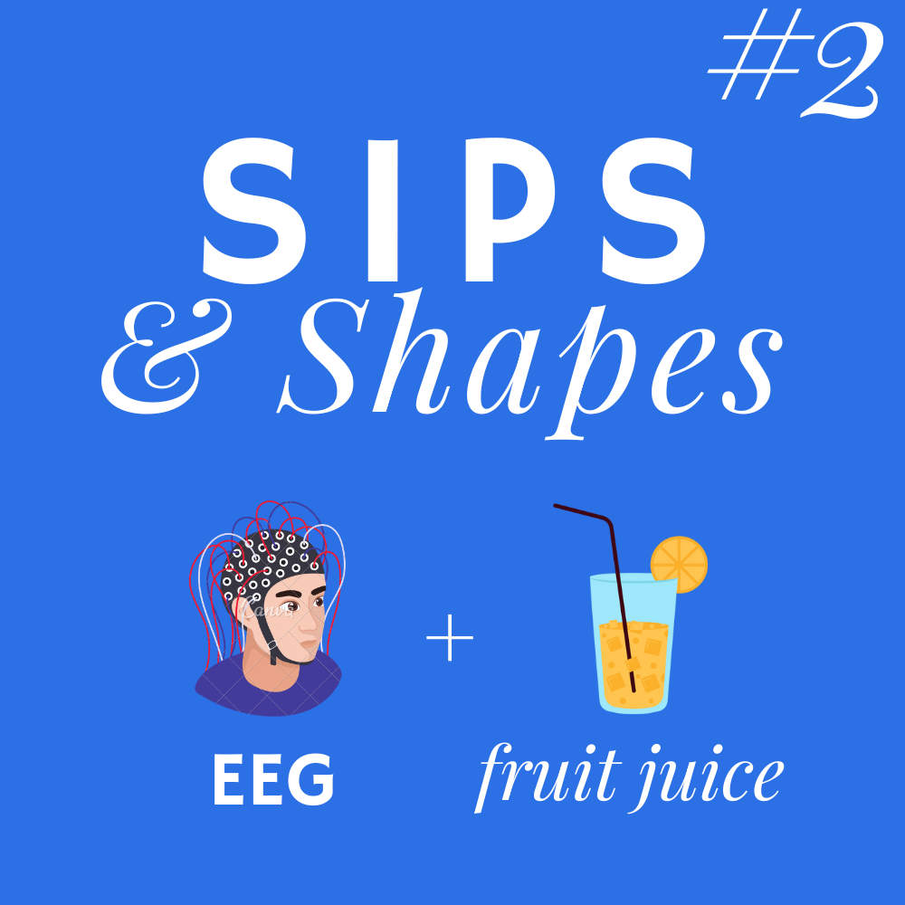
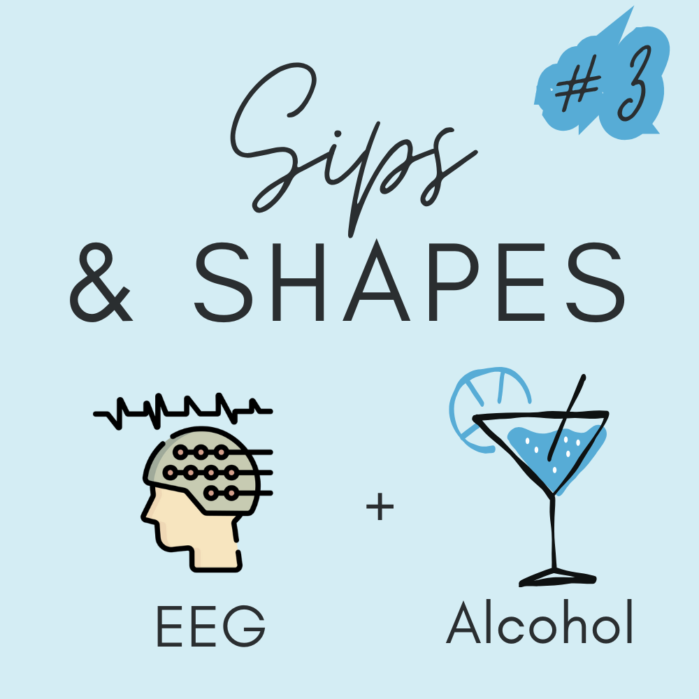
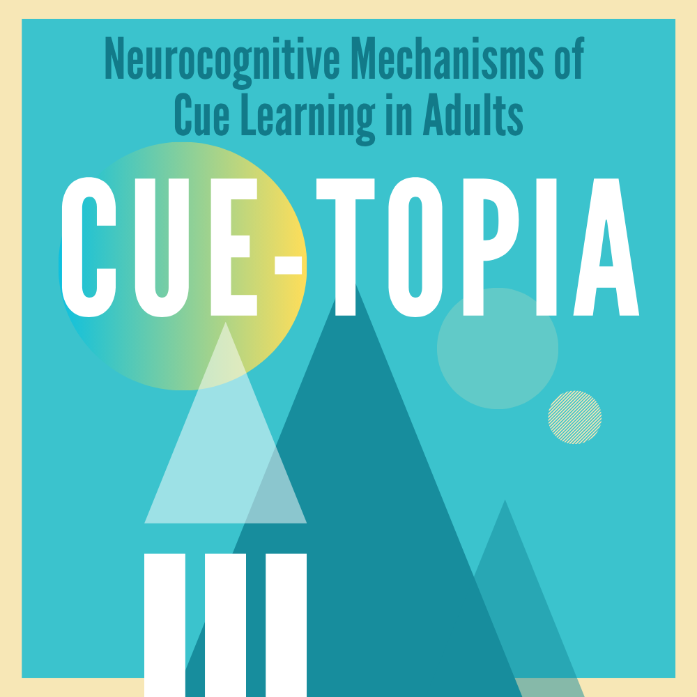

Our lab is currently recruiting participants to help us study how the brain supports attention, memory, learning, and cognitive control. These fundamental mental processes shape how we interact with the world—and understanding them may provide insight into why some people are more vulnerable to substance use problems than others.
We recruit participants across a range of alcohol use patterns, including those who don't drink at all. Some of our studies are open to young adults only, while others include a wider age range. Tasks may include surveys, computer-based tasks, and non-invasive brain activity recording methods such as EEG.
Click below to learn more about studies currently recruiting and how to get involved. Each page includes a brief overview and a link to an eligibility screener. Feel free to take as many screeners as you'd like to see which studies you qualify for.
All of our studies offer compensation for your time and participation, with details provided on each study’s information page.

Sips and Shapes 2
This study looks at how taking small sips of liquid (water and fruit juice) affects brain responses during a simple attention task over the course of 3 consecutive days. Participants (aged 18-25) view shapes on a screen while we record brain activity using EEG.

Sips and Shapes 3
This study looks at how taking small sips of liquid (fruit juice and your preferred alcohol beverage) affects brain responses during a simple attention task over the course of 3 consecutive days. Participants (aged 21-25) view shapes on a screen while we record brain activity using EEG.

Cuetopia
This study also looks at how taking small sips of liquid (water and fruit juice) affects brain responses during a simple attention task measuring participants' EEG. But this time, we are recruiting participants with a wider age range (18-65 years old), and participation involve a single lab visit of approx. 1.5-3hrs. Reside in Boone or adjacent counties may be eligible.